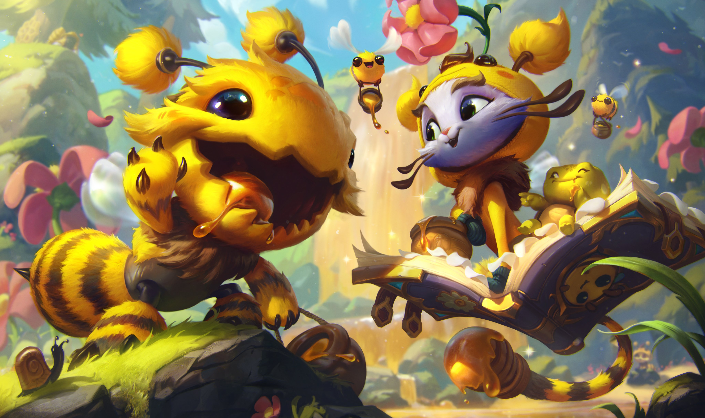

Home
Major
Music
Gaming
Quick Links to My Favorite Websites
Twitch
YouTube
Twitter
I am 22 and in my last year at UW. Click the pages above to learn more about me!
Here is a picture of my favorite video game character:
Here is a picture of my favorite video game skin:
